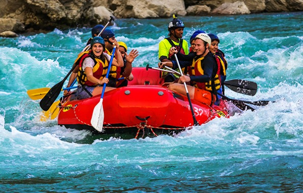

Our mission is to connect people with nature through unforgettable rafting experiences. We believe in safety, fun, and respect for the river. Whether you're a first-timer or a seasoned rafter, we have the perfect adventure waiting for you.

Our mission is to connect people with nature through unforgettable rafting experiences. We believe in safety, fun, and respect for the river. Whether you're a first-timer or a seasoned rafter, we have the perfect adventure waiting for you.
Founded in 1998 by Risper Thuram river enthusiast , Wild Waters Rafting started as a small family operation with two rafts and a dream. Over the past two decades, we've grown into a premier rafting outfitter, known for our expert guides and commitment to preserving the rivers we love. What began as weekend trips on the local river has expanded to multi-day expeditions and corporate team-building adventures.